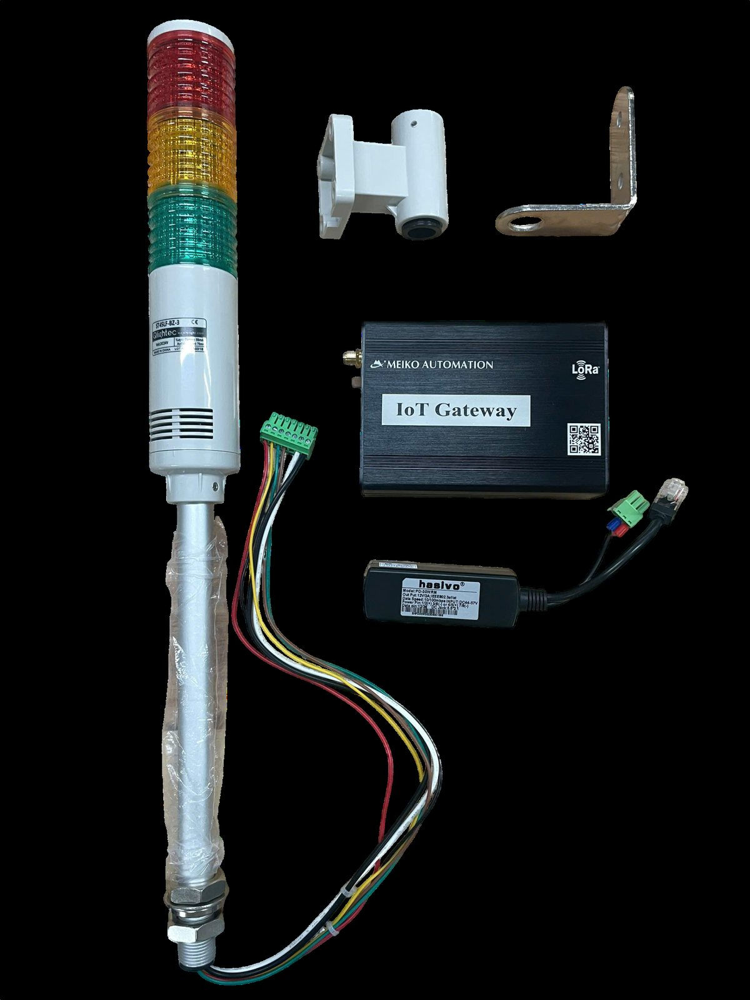

MGAW-V1 Thiết bị cảnh báo IoT công nghiệp tích hợp âm thanh và ánh sáng.
MGAW-V1 hợp nhất cảnh báo âm thanh và đèn báo trong một thiết bị IoT công nghiệp. Thiết bị hỗ trợ MQTT, HTTP API, PoE và cập nhật firmware OTA theo catalogue.
Điểm chính
- 01
Cảnh báo âm thanh
Loa Class D 8 W, áp suất âm khoảng 90 dB tại 1 m.
- 02
Kết nối IoT
Kết nối Ethernet RJ45 và WiFi; giao thức MQTT và HTTP API.
- 03
Đèn báo ba màu
Đèn LED đỏ, vàng, xanh với các chế độ bật, tắt, chớp và pattern.
- 04
Quản lý từ xa
Hỗ trợ cập nhật firmware OTA và theo dõi trạng thái online/offline.
Thông số kỹ thuật
Thông số được trích từ tài liệu kỹ thuật của Meiko. Dòng ghi "dự kiến" cần được xác nhận cùng đội kỹ thuật cho cấu hình cụ thể.
Ứng dụng
- Giám sát dây chuyền trong nhà máy thông minh
- Cảnh báo tích hợp CCTV-AI
- Cảnh báo an toàn máy móc và kho vận
- Cảnh báo phòng máy chủ và khu vực hạn chế
| Nguồn cấp | PoE 802.3af/at + 12V dự phòng | Theo catalogue |
|---|---|---|
| Mạng có dây | Ethernet RJ45 | Theo catalogue |
| Kết nối không dây | WiFi | Theo catalogue |
| Giao thức | MQTT / HTTP API | Theo catalogue |
| Công suất loa | 8 W Class D | Theo catalogue |
| Áp suất âm | ≈ 90 dB @ 1 m | Theo catalogue |
| Đèn báo | LED đỏ / vàng / xanh | Theo catalogue |
| Modbus | RS485 | Theo catalogue |
| Firmware | OTA Update | Theo catalogue |
| Kích thước | 120 × 88 × 38 mm | Theo catalogue |
| Độ trễ | ≤ 1–2 giây | Theo catalogue |
| Nhiệt độ vận hành | −10°C đến +50°C | Theo catalogue |
| Độ ẩm | 10%–90% (không ngưng tụ) | Theo catalogue |
Hình ảnh

Tài liệu
Sản phẩm liên quan


Cần cấu hình cho dự án của bạn? Trao đổi với đội kỹ thuật Meiko.
Yêu cầu tư vấn / báo giá